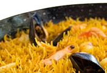
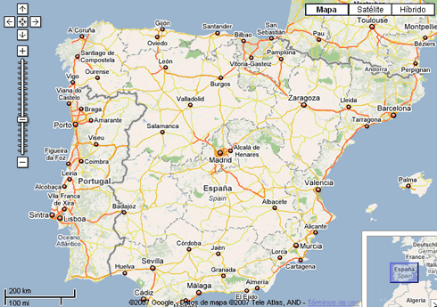

1. Introducción
La práctica de hoy consistirá en utilizar Google para realizar una serie de búsquedas de información relativas a diferentes temas que os voy a proponer, con lo que afianzaremos lo visto hasta ahora en materia de control de navegación, acceso a páginas web y consulta de información.
2. Muffin
Quiero cocinar un Muffin de chocolate para este fin de semana. ¿Eres capaz de encontrar una receta y si puede ser un video que me explique cómo tengo que cocinarlo?
3. Telepizza.
Cocinar el Muffin nos ha llevado mucho tiempo y no tenemos cena, así que la vamos a pedir. ¿Sabrías encontrar el teléfono del Telepizza más cercano en Castellón? ¿Cuántos establecimientos Telepizza hay en la ciudad?
4. Vamos de restaurante.
El domingo queremos irnos a comer a un restaurante que nos han recomendado en Alcocebre, se llama Can Roig. ¿Sabrías encontrar la página web del restaurante, y ver las fotos de las especialidades de su menú?
¿Cuál es el enlace más interesante?
5. Google Maps.
Vamos a iniciarnos en los mapas de Google, uno de los recursos más importantes de la web hoy en día. Quiero que busquéis nuestra ubicación actual en el mapa, y que consultéis los kilómetros que hay desde la UJI hasta el restaurante de Alcocebre, y la cantidad de dinero en gasolina que gastaríamos en el viaje.